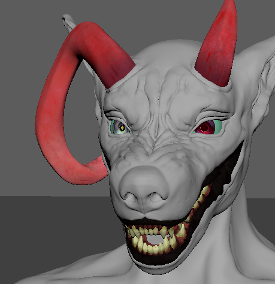

About Me
Hello, my name is Naomi Puchta! I am a Gnomon Graduate specializing in FX, currently based in the Bay Area. My interest in the industry began back in high school, doodling characters on a crumpled sheet of paper during and between classes. At the same time, I took several computer science classes, but eventually found my way into the film and games industry. FX brings the best of both worlds, allowing me to express my creativity through various mediums while feeding my love for problem solving.
My passions extend towards modeling, texturing, and sculpting allowing me to turn my 2D concepts into 3D environments and lively characters. I'm always excited to collaborate with others who share the same passion, and I look forward to sharing my work with the world.
WIPs
My first human head sculpt.
Big Bad Wolf.
Projects

Neon city loosely inspired by the bright and grungy aesthetic of the cyberpunk world.
Prehistoric volcanic eruption.

Haunted and abandoned classroom.
City Rain
Breakdown
This city is inspired by some of the semi futuristic neon city artwork I've seen over the years as well as the vibrant nights in Tokyo. I took my knowledge in modeling and texturing, and created a scene that then could be applied into Houdini to bring life to the scene.
Programs Used
Modeling

I first began modeling out the buildings, assets, and pathway in Maya. Once I was satisfied with the layout I went back in and began assembling the UVS. (Human Models were placed in for size reference so that when I eventually began running simulations, that everything would be roughly the correct scale.)
Texturing

Once this was complete, I took each asset into Substance painter and began painting on the textures. Each Texture was then loaded into Houdini and Rendered out to give an idea what a render would look like.
Into Houdini

Then I began working on the simulations: trickling rain, main rain, puddle, splashes, pipe steam, and ground smoke.
Compositing
Since only so much could be done with texturing, I took the final renders into nuke to add certain blurs and color grading to achieve the final effect!
Volcano
Summary
Due to time constraints on the project I did not document progress photos for this project. However, while I do not have photos there are still some things I would like to note on this project.
The primary challenge when working on this volcanic scene was figuring out a believable way to create flowing lava. I scoured across the internet for tutorials on lava, and ended up settling and compiling a few that followed this method: The lava's shifting colors was primarily controlled by the velocity the liquid particles. The faster the lava flowed, the brighter and hotter the lava, the slower top crust would become darker. To achieve the bubbling lava, I followed a simple tutorial that involved adding surface tension to the water and spawning randomized spheres at the bottom of the liquid container that would subtract a section of the liquid. Said liquid bubble would then rise up due to the built in engine in Houdini, and the liquid (due to the viscosity variables added in the lava) and the bubble would "pop" once it reached the surface. Said tension and bubble size would be tweaked and randomized to get 'natural' looking bubbles in the lava. Temperature was also a very important part of this scene, as the top layers controlled when lava dripped or popped. This viscosity would rise and decrease the velocity and by result the color of the liquid.
One of the main troubles I ran into during this project (in part due to time constraint), was that the liquid container would explode or jitter. This was remedied by carefully tweaking the velocity and surface tension attributes, though I was never able to figure out exactly why certain values would make the lava break.
The props in the scene were Quixel aquired assets that I retextured to give all rocks a more uniform color and grit. The terrain was a height field modified with randomized stones that each had a varying degree of noise and rotation. The volcano terrain was textured in substance painter, with a high detail displacement map baked into a low resolution model. The crystal seen on the left was built by making a randomized primary chunk, scattered on a small plane that then had smaller randomized chunks 'cut' out. Some displacement and smaller flecks were scattered and randomized on the crystal as well.Similar to some of the effects used in the raining city, I took certain portions of the terrain and created a randomized black and white noise map that would act as the emitter for the smoke. The noise was gradually changing, which allowed for certain parts of the smoke to emit before slowly stopping and disappating.
While there are parts of this project I found to be very helpful in my learning, and some parts of the project I like, I would have done certain parts of this project differently were I to start from the beginning again. Part of my container issues at the time were due to holes in the geometry, something that would have been fixed if I had focused on properly merging the geometry before getting to the liquid. Instead it was a battle of going back and forth, checking and double checking certain parts for gaps or improper normals. In all this project gave way to a lot of fun experimentation and fixes that I now carry into my future projects.
Programs Used
Classroom
Breakdown
Having a love for everything scary and horror, I wanted to create a haunting classroom scene that would leave the viewer unnerved.
Programs Used
Modeling


this was a texturing and modeling project, so I started out the process by blocking out the classroom roughly before refining and resizing modeled assets.
Texturing

Once this was done I initially finished the project by utilizing photoshop and Maya's Vray to render out a completed version of the project. Eventually I revisited this project and decided to add some atmospheric FX in Houdini.
Houdini FX

I began by adding dust and debris into the air before introducing a spider web simulation and some falling debris.
Rendering
Then I Rendered and composited the final scene, utilizing Zdepth, light groups, and shadow passes to amplify the detail and mood in the original render in Maya.
Octopus Lady

Breakdown
This is my first ever human head sculpt! This was made during a texturing course. The primary sculpt is mostly finished (the first 'version' of the head having been done in two days with tweaks and the addition of hands being added later on.
The head and hands are sculpted using the standard tools in Zbrush, before being uv-unwrapped and sent to Maya for layout. Afterwards, the model was imported into Mari for texturing.
As I was fairly new to Mari, there are still some workaround and tweaks I'd like to make. But I learned quite a bit through trial and error and will take this experience into future character projects.
Programs Used
Initial Concept

I started out with a quick doodle of the concept, mainly focusing on getting the base colors for the character as well as the shape language.
One of the challenges I faced during this point was attempting to translate this character concept into a 3D model that was at the minimum semi-realistic. On top of this, I was going to be exposed to software I was still relatively new to (more specifically Mari) so a lot of troubleshooting was inevitable.
Sculpt Progress

This was the first progress of the human sculpt. One setback during this process was maintaining human proportions of the cheek, forehead, and jaw. I was aiming for a semi-realistic human face, but at this time was still struggling with the proportions. This being the first human head I've worked on, I added more references of front and side profiles (along with some outside instruction/critiques from my professor) in order to nail down the face.

And this was the resulting face after another week (spending roughly 3~ days working on the refinements). As you'll see during the rest of this process, more tweaks were made on the facial sculpt in order to complement the incoming texturing (and vice versa).
While I wasn't able to make the hair tendrils exactly how I envisioned them, I decided it would be better to focus on the face of the sculpt rather than the hair.
Texturing Progress


The beginning process of texturing was done through Mari. Most of this was initial playing around with the program, where the colors were more on the rougher side. I experimented with the stamping skin texture brush as is seen here.
Before

After

However, I wasn't necessarily pleased with the original skin texture, many parts were patchy or dull. I restarted said skin texturing by deleting the original and starting over now that I had more comfortability with the tools in the program.
First Render

This was the first render that I did in Maya, mostly focusing on trying to get the skin properly rendered. In this stage I realized the pores and lines on the face were being washed out by the subsurface scattering.
At this point I had not textured the tentacles on the hair, and was also in the process of learning how to apply hair groom (through xgen) to the face to create eyebrows, lashes, and face fuzz.
There were a few iterations in between these two renders, however the main notable changes are that the melted makeup was darkened, the tentacles are in the process of being textured, and some very minor model changes were made.
At the point of writing this, this is my current texturing for the project. I plan on making some major tweaks to the tentacles, de-glossing the skin on the face, and adding texture to the neck and shoulders (Freckles on the shoulders).
Extra Assets (Current Progress)

After taking a look at the scene itself, I started to realize that the renders themselves were looking plain (seeing as it was a bust shot with no notable jewelry or clothing). So I am modeling a pair of hands to pose and texture to make the scene more expressive.
I am in the process of texturing said hands (they are already UV'ed) before throwing it into the scene with the head.

One thing to note is that the headshot will likely end up being a 3/4s view as the straight on render is a bit bland.
Big Bad Wolf
Summary
This sculpt is my second ever completed fullbody sculpture. I attempted to go for a more semi-realistic animal face and as such had to look for enough images. Nailing down the face took a bit of time, and a lot of adjustments in order to get the desired look.
The current state of the project is a little past the texturing (something I plan on revisiting as I lay down the groom on this wolf to finetune certain details like the nose or the creases around the eyes.) One of the main struggles was the anatomy on the torso and arms. As I am still fairly new to sculpting, creating anatomy that while not fully realistic still follows the general guidelines of muscles and joints was quite difficult. With some assistance from my professor at the time, I was able to make said adjustments and add my own details to the sculpt to make it more interesting to look at. While for the most part the sculpt is complete, I do plan on making some adjustments to the face as I begin to lay down the fur on the rest of the body. Though having proper anatomy and detail on the torso is equally important, due to the density of fur the margin of error for certain missing details does not compare when seen alongside the face that will have sparser hairs towards the fleshier parts of the face (i.e eyes,nose,lips ear cannal).
I started out with some thumbnails of some character designs for the project. I already had a character in mind for the project, so the beginning was mainly playing around with silouettes and resizing certain parts of the character (I.E the hat). Afterwards I drafted a concept drawing based on the thumbnail chosen. Note that while my concept art is very stylized, I already had the intention to go for a more semi-realistic piece.
Above are some progress photos as I began working on the sculpt (mainly just photographing the notable changes in anatomy/proportion as I gained more experience in sculpting.) At the time, though now I am quite familiar with Mari, I used substance painter for the texturing and Maya for the uv mapping. The eyeballs were an inspired by an old tutorial that I originally followed to make semi cartoonish eyes. However in an old project, one of the troubles I had with the eyes was that on a more stylized character these eyes end up looking extremely uncanny. Rather than going for a realistic eyeball I instead aimed to lean more on the stylized front. I hand painted the iris and pupil before laying it on a simple eyeball model (taking a sphere and flipping and flattening it to shape a proper eye).
As you can see on the mouth that has been painted, I textured the gums, teeth, and lips seperately. This may be subject to change in the future as I find (similarly with the tongue and texture on the hat monster) that there is a fine line between too realistic or too cartoonish that I need to make adjustments to. The current plan for this project is to begin taking it into maya for xgen, working on the lower and upper body of the wolf groom. I plan to make adjustments to the face sculpt and hands so that when I begin to place separate grooms on those pieces that the fur/model can be adjusted quickly back and forth in order to get the density and pattern I am looking for. While I do have clothes in the original reference, for the time being I plan on fully grooming the body and possibly revisiting/renewing this project at a later date once I am more familiar with programs like Marvelous.
Programs Used
About Me
Hello, my name is Naomi Puchta! I am a Gnomon Graduate specializing in FX, currently based in the Bay Area. My interest in the industry began back in high school, doodling characters on a crumpled sheet of paper during and between classes. At the same time, I took several computer science classes, but eventually found my way into the film and games industry. FX brings the best of both worlds, allowing me to express my creativity through various mediums while feeding my love for problem solving.
My passions extend towards modeling, texturing, and sculpting allowing me to turn my 2D concepts into 3D environments and lively characters. I'm always excited to collaborate with others who share the same passion, and I look forward to sharing my work with the world.